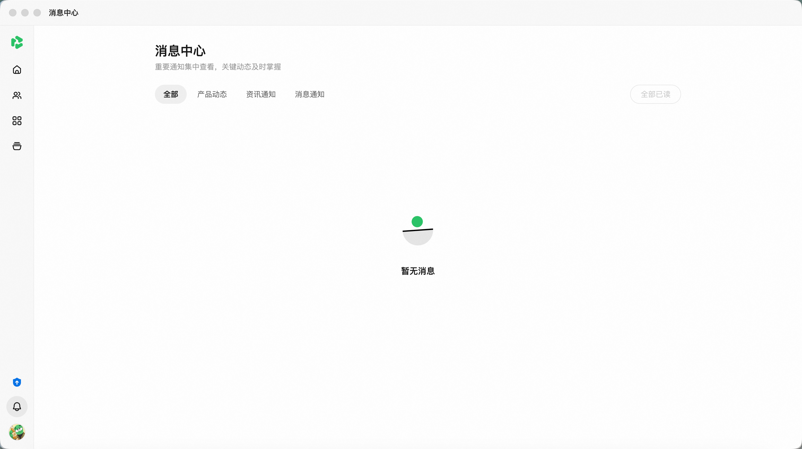
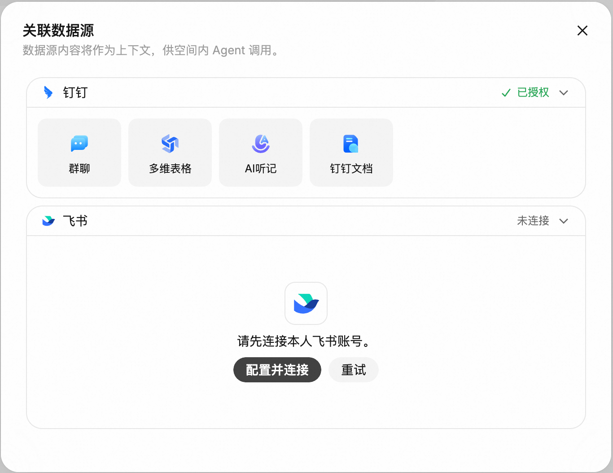
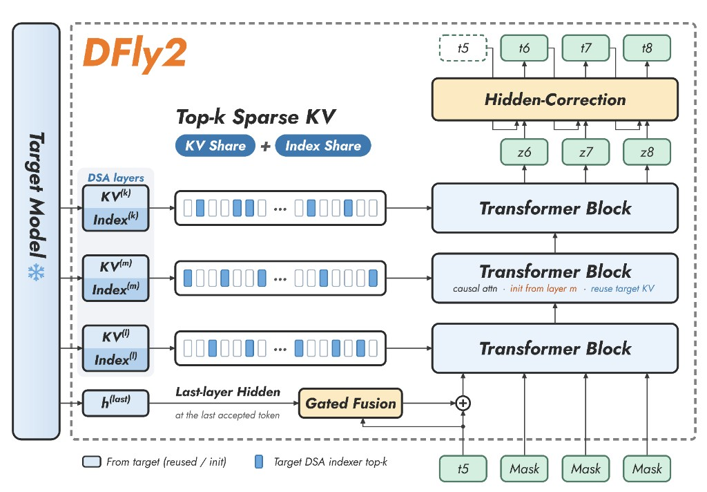
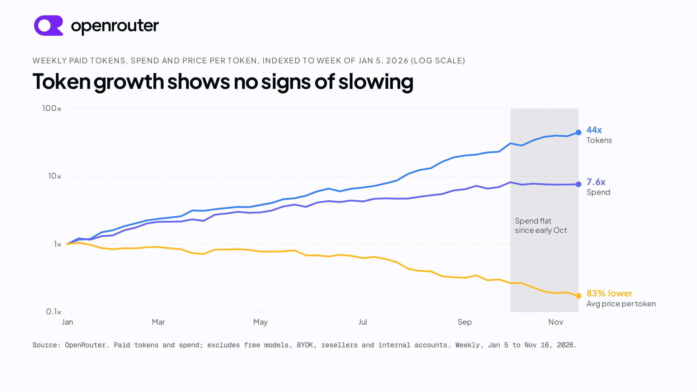

AI Intelligence Daily · 2026-11-27（周五）
统计窗口：主窗 2026-11-26 08:00 → 2026-11-27 08:00（上海 / Asia/Shanghai）。吸收 11-26 白天全部 SILENT 快讯（09:01 至 23:02）near-miss，并补扫约 14:50Z 至 00:00Z 的隔夜官方 X 与官网。当日为美国感恩节，国际一线厂几乎没有新产品发船。事实与判断分区 · 国内/国际双轨。· 已在售 Desktop/CLI：本窗能力向变化是 千问办公客户端 2.2.0 / 2.2.1（消息中心、跨端任务目录、协作空间引入飞书/钉钉资料；按已在售 Work 客户端小版本计入 desktop_shipping），Qwen Code 0.28.6 / 0.28.7（日间托管会话停放，隔夜 Harness 内核、跨控制面接管，以及 Claude Code 2.1.332 mods 兼容；含破坏性变更），以及 Qoder Desktop 0.5.20（官方 changelog 日期 November 25，本窗才顶出；在既有云端任务/跨设备表面之上写入桌面创建/继续云端任务，不计新的 desktop_shipping）。另有 Qoder CLI 1.1.99（Skill 启用分级与 BYOK 修复）、Kimi Desktop 1.5.1 / CLI 2.8.1（相对昨日已推送的 1.5.0 / 2.8.0 为点补丁）、MiniMax CLI 0.7.10（官方 changelog 稍后补登）、OpenCode v2.4.2、Antigravity CLI 1.5.18，以及 Daily 11-26 漏记的 Devin Desktop v3.15.14（changelog 日期 November 25）。点版本与预发：Factory npm 1.21.1（官方 changelog 仍顶 1.21.0，不以无说明的 npm 点版本写成 Desktop 新发船）· Copilot CLI latest 仍 1.0.116（prerelease 已到 1.0.117-4 @22:53:06Z，不以预发写成已发船）· Codex latest 仍 0.172.0（alpha 已到 0.174.0-alpha.8 @22:05:12Z）· Claude Code latest 仍 2.1.332 · Gemini CLI 仍 0.71.1 · CodeBuddy latest 仍 2.187.0 · MiniMax Desktop 仍 3.1.19 · ZCode 仍 4.0.0 · 小艺 Work 仍 0.7.8 · StepCode 仍 0.1.8 · 讯飞 WinWork 仍 V1.1.30 · MCP servers 仍 v2.5.0 · dsh latest 仍 0.2.2-rc.5 · agent-desktop 仍 1.3.1。OpenAI 状态页：Codex GitHub 审查与合并事故于 14:07:54Z / 22:07:54 CST 改为 resolved。Claude 状态页：Microsoft 365 加载项事故仍为 identified，正文停在 11-25 20:21:12Z。★（约 08:10 CST，对比 Daily 11-26 约 08:18 CST）：deepseek-harness 287,608（+546）· opencode 229,405（+211）· servers 92,283（+31）· Hy-MT3 91（+18）· kimi-code 8,307（+14）。本窗新开源跟踪 Tencent/AngelSpec 358（API 读数；不编造更早基线）。qwen-code 30,964（昨日日报未列入对照，不编造涨幅）。
今日一句话判断
今天真正往前推的，不是国际大厂的感恩节发布，而是国内工作端把跨端任务、会话停放和托管 Harness 接管写成了可安装能力；同一天，额度开始在聊天与 Codex 之间合并，工具回包能否被信任也成了社区的焦点。
专栏一｜新闻
本栏结构：
- 国内工程头条：Qwen Code 同日连发 0.28.6 / 0.28.7，把托管会话停放、Harness 内核和跨控制面接管写进稳定通道（NEW 311）
- 国内产品中栏：千问办公 2.2.0 / 2.2.1 上线消息中心、跨端任务目录，以及协作空间引入飞书/钉钉资料（UPDATE 260，desktop_shipping）
- 国际商业中栏：补收 OpenAI 帮助中心说明，Plus / Pro / Business 将从 12 月起在 ChatGPT 与 Codex 之间共享额度（NEW 312；稿在 Daily 11-26 窗内，当时未写入）
- 国内/双边基础设施中栏：混元官方放大 DFly2 / AngelSpec 开源，面向长上下文与 agentic 场景的推测解码草稿模型（NEW 313，并 UPDATE 255）
- 国际开源中栏：JetBrains 官方账号放大 Mellum2.1 Instruct（NEW 314；博文日期属性 11-25，HF 权重更早）
- 国际产业中栏：OpenRouter 用自身付费流量数据讨论 Jevons 悖论是否仍成立（NEW 315）
- 短讯：OpenCode 2.4.2、Qoder 0.5.20 / CLI 1.1.99、MiniMax CLI 0.7.10、Devin 3.15.14、Antigravity 1.5.18、GPT-6.2 计费更正、Hy4 flash 渠道与促销、状态页
排序依据：重要度 → 与两条主线的相关性 → 时效。Qoder Desktop 0.5.20、Kimi 1.5.1 等已跟踪产品的点版本，放入「重点事件新进展」，避免在新事件栏无增量重报。
1. Qwen Code 同日连发 0.28.6 与 0.28.7：托管会话可停放，Harness 可跨实例接管，并兼容 Claude Code mods
A · NEW · 国内 · B/C/E · 主窗 + 隔夜 · watchlist 311
发生时间：0.28.6 的 npm latest 为 2026-11-26T05:06:56Z（13:06:56 CST），GitHub 稳定发行 published 05:51:04Z（13:51:04 CST）。0.28.7 GitHub published 18:04:26Z（11-27 02:04:26 CST），npm latest 18:58:13Z（02:58:13 CST）；配对 SDK TypeScript 0.1.37 于 19:14:18Z。11-26 23:02 快讯仍见 0.28.6，0.28.7 是隔夜稳定通道。官方 X 本窗无对应宣布。不要把仍为 prerelease 的 v1.0.0-preview.2 写成已发船。
发生了什么
Qwen Code 在同一统计窗内连续两次更新稳定通道。0.28.6 的发行说明写明：等待工具批准、提问、Hooks 或 MCP 时，可把会话托管停放，并能在 Harness 重启与冷恢复后继续；headless / Ink TUI 默认改用事件总线内核（可用 experimental.eventBusAgentLoop 退出）；Send 改为把正在运行的 shell 放到后台而不是停掉。破坏性变更是移除 MessageRewriteMiddleware。
0.28.7 把故事写到托管运行时本身。官方 Highlights 包括：Qwen Code CLI 现在可运行在 Harness 内核上，使用统计默认关闭，除非 privacy.usageStatisticsEnabled 为 true；为 Claude Code 2.1.332 编写的 mods 可在 Qwen Code 中加载，注册命令并绘制其条带，无法识别的新 hook 名称以一行诊断跳过；空闲挂起和 Action parks 会释放 Session 位置，让另一台健康的 Harness 在旧写者租约到期前接管，官方还用两个真实 Harness 进程做了回归：第二个实例接管已停放的公开 Shell Action 时，工具只运行一次。工作区快照可按可配置数量保留并在重新打开时恢复。另一项破坏性变更是：Qwen Code 不再检测模型循环或限制工具调用次数，工具结果和错误在所有界面原样传给模型。
我的判断
判断：这是本窗对 Work / Agent 引擎权重最高的一条。它不是新的模型，而是把「长任务怎么活过一轮批准、怎么在多实例之间交接、第三方 mods 能否迁移」写成了稳定通道的行为。0.28.6 解决的是单机会话不要因为等待人点头而断掉；0.28.7 解决的是托管池里的写者离开之后，谁来接着跑、工具会不会跑两次。Claude Code mods 的兼容，说明编码 Agent 的扩展形态正在出现跨厂迁移的压力，但不能写成协议层的标准互通。取消循环检测和工具调用上限是明确的行为变化，可能提高长任务的通过率，也可能让失控循环更难被运行时拦住，不能只当成性能优化。
未来影响
短期看，已经在用 Qwen Code 的人需要核对 0.28.6 的停放开关、0.28.7 的默认内核，以及取消循环检测后的失败模式。长期看，若「会话停放 + 租约交接 + 工具恰好一次」成为托管 Harness 的标配，云端 Agent 的正确性将更多取决于控制面事务，而不是提示词里写「请不要重复执行」。
对智能体互联网
无新的开放发现协议。可对照的是：Claude Code mods 能在另一家 CLI 里加载，说明扩展格式开始被当作可迁移资产；但这仍是产品兼容，不是跨厂注册或授权标准。
对 Work / Agent 引擎
直接相关。可对照的设计点包括：等待批准/Hooks/MCP 时的会话停放与冷恢复；事件总线作为默认 Agent Loop；Send 把前台 shell 转后台而不是杀死；跨控制面的租约释放与「工具只运行一次」回归；工作区快照保留；以及把循环检测从运行时默认能力里拿掉之后，观测和熔断要补在哪一层。
值得进一步做什么
- 对照 v0.28.6 / v0.28.7 发行说明，拆停放、接管、事件总线和 mods 加载的默认值与限制。
- 若自有托管 Harness 有多实例，可对标「释放 placement 与写者租约、工具恰好一次」的测试方法。
- 不要把 Claude Code mods 能加载写成 MCP 或 Skill 协议已经统一。
真实来源
- 主来源：https://github.com/QwenLM/qwen-code/releases/tag/v0.28.7
- 补充：https://github.com/QwenLM/qwen-code/releases/tag/v0.28.6 ；npm
@qwen-code/qwen-code@0.28.7
2. 千问办公 2.2.0 / 2.2.1：消息中心、跨端任务目录，以及把飞书和钉钉资料引进协作空间
A · UPDATE · 国内 · C/E/D · 主窗 · watchlist 260 · desktop_shipping
发生时间：官方桌面更新日志 https://docs.qwenwork.cn/release-notes/desktop 日期栏均为 2026年11月26日，无精确到分钟的发布时间。Daily 11-26 与当日 09:01、10:51 快讯仍顶 2.1.0 / 2026年11月15日；12:58 未单独复核该页，15:05 快讯首次核验到 2.2.0 / 2.2.1。本窗 @Alibaba_Qwen 无对应发船帖。官网营销主文仍写「千问办公 2.0」，不能用首页文案否定更新日志。
发生了什么
千问办公桌面客户端在同一天连续发布小版本与补丁。2.2.0 的官方说明是：上线消息中心（产品动态 / 资讯通知 / 消息通知）；IM 频道按主会话、子会话分层，支持改名和归档；本机、云端与其他电脑上的任务和项目可在同一目录搜索与批量整理；协作空间可直接引入飞书文档、个人钉钉连接中的文件以及资料空间已有文件。2.2.1 是同日补丁，优化远控任务列表与运行状态刷新，并修复本机打开 PPT 后预览标签未关闭、完成数据隔离后无法使用淘宝连接器、未完成数据隔离的用户切换「日常办公版/电商经营版」后远程会话及任务列表读取失败等问题。
同页 2.1.0（11-15） 才写「Qwen4-Max 首发接入」和钉钉 AIhub MCP 免登授权。这些已在 11-11 快讯与 Daily 11-17 覆盖，不要写成今日新发。网页端日志顶为 11 月 25 日的稳定性修复，不是 2.2.x 桌面能力说明。
我的判断
判断：这是已在售 Work 客户端的能力更新，不是 2.0.0 那类远控 / Team Agent 首发，但和用户的工作引擎直接相关。真正新的是「跨端任务被放进同一个可搜索目录」，以及协作空间开始把飞书、钉钉里的资料当成可引入的工作对象。消息中心和 IM 分层则说明，工作 Agent 的桌面正在同时承担通知、会话和资料入口，而不只是一个对话框。2.2.1 里与数据隔离、淘宝连接器和双版本切换有关的修复，提醒这些连接器仍然受账户与隔离状态约束，不能假设授权一次就永远可用。
未来影响
短期看，已经在用千问办公的人会先遇到消息中心和跨端整理，而不是新的模型名。长期看，若办公 Agent 都把「本机 / 云端 / 其他设备 / 外部文档空间」收进同一目录，Workspace 与 IM 连接器的权限边界会比聊天框更早成为产品竞争点。
对智能体互联网
无新的开放协议。可对照的是：飞书文档与钉钉文件是作为已授权连接中的资料被引入，而不是新的跨厂发现机制。
对 Work / Agent 引擎
直接相关。可对照跨端任务与项目的统一检索、协作空间的外部资料引入，以及数据隔离失败时连接器和远程任务列表如何降级。
值得进一步做什么
- 阅读官方 2.2.0 / 2.2.1 说明，确认引入飞书/钉钉资料的权限范围和隔离条件。
- 不要把 2.1.0 的 Qwen4-Max / MCP 条目误写入今日新发。
- 关注官方账号或文档是否补上分钟级发布时间与安装包校验信息。
配图
见图 1（官方桌面更新日志中的消息中心附图）与图 2（同页「协作空间引入资料」附图），来源页 千问办公桌面更新日志。


真实来源
- 主来源：https://docs.qwenwork.cn/release-notes/desktop
- 补充：网页端日志 https://docs.qwenwork.cn/release-notes/web （顶条为 11 月 25 日，不是 2.2.x 能力说明）
3. ChatGPT 与 Codex 将从 12 月起共享额度：官方把它写成把 Work 的能力收进主 ChatGPT
A · NEW · 国际 · I/C · 补收 11-25 官方说明 · watchlist 312
发生时间：OpenAI 帮助中心文章 Understanding ChatGPT and Codex usage limits 在 Daily 11-26 主窗内已更新（11-26 10:51 快讯见到页上写 Updated: yesterday；TechCrunch 稿日期为 2026-11-25）。当日日报未写入，本报补收。本窗官方 X 与 News RSS 仍无对应新闻稿。本报核验该页时，正文仍写「Starting in December」。
发生了什么
官方帮助中心写明：从 12 月起，Plus / Pro / Business 的用量额度将在 ChatGPT 与 Codex 之间共享，并按 token 计量；官方把这一调整写成「把 Work 的智能体能力带进主 ChatGPT 体验」。Instant chat 不从该共享额度中扣减。用户可在 Settings → Usage 查看合并后的剩余用量与重置时间；达限后可等待重置、升级或购买积分。官方还写，一小部分用户可能在 12 月前先看到变更，以便收集早期反馈。文章没有公布具体的额度数字或各档 token 上限。
同一统计窗内，@thsottiaux 于 2026-11-26T02:50:10Z 说明 GPT-6.2 上线时计费有误，给大多数用户错误折扣了 Astra 与 Sol 用量，现已修好，同样工作会占用更多套餐额度，并称相对上周在 GPT-6.2 上会快 40% 触达限额；@OpenAIDevs 于 02:58:09Z 官方转发。这是已经生效的计费纠正，不是 12 月共享额度本身，数字为官方自述，本报未复测，详见价格栏。
我的判断
判断：这条的分量在商业入口和工作面合并，而不在新的 API。OpenAI 明确把「聊天」和「Codex 工作」放到同一笔额度里，等于承认这两条产品线在用户侧已经分不清，也必须放到一起计量。它会改变重度 Codex 用户的预算感受，尤其是那些本来把聊天额度和工作额度分开用的人。不能把「12 月生效」写成今天已经合并，也不能在官方未给数字的情况下估算各档会少多少。计费更正已经发生，但那是 GPT-6.2 Astra / Sol 的计价修复，不要和 12 月的共享额度混成一件事。
未来影响
短期看，Plus / Pro / Business 用户会在 12 月前后重新规划 ChatGPT 与 Codex 的合用方式。长期看，若「主聊天界面吸收 Work 能力、额度也跟着合并」成为方向，工作 Agent 的计费可能越来越不像独立的开发者工具订阅，而更像同一账户下的一份工作额度。
对智能体互联网
无直接启示。
对 Work / Agent 引擎
直接相关。产品若同时提供聊天与编码/后台 Agent，需要提前想清楚额度是分账还是合并，以及「轻量即时对话」要不要单独豁免。
值得进一步做什么
- 关注 12 月生效时 Settings → Usage 的实际展示，以及官方是否补上各档数字。
- 把 GPT-6.2 计费更正视为已经发生的额度收紧，不要和尚未生效的共享额度写成同一次调价。
- 暂无需因此改自有架构，但做套餐设计时可对照「主体验合并、即时对话豁免」。
真实来源
- 主来源：https://help.openai.com/en/articles/20001625-understanding-chatgpt-and-codex-usage-limits
- 补充：TechCrunch 2026-11-25 https://techcrunch.com/2026/11/25/openai-says-heavy-chatgpt-users-may-hit-limits-sooner-as-it-merges-chat-and-work/ ；@OpenAIDevs 2026-11-26T02:58:09Z 转发的 GPT-6.2 计费更正
4. 混元开源 DFly2 / AngelSpec：让草稿模型复用目标模型的稀疏选择，专门加速长上下文和 agentic 解码
A · NEW · 国内/双边 · A/H/C · 主窗 · watchlist 313 · 并 UPDATE 255
发生时间：论文 arXiv:2611.34776 submitted 2026-11-25（页面记录 2026-11-25T17:37:49Z / 11-26 01:37:49 CST），落在 Daily 11-26 窗内但当日未写入。官方 Hugging Face 权重 AngelSlim/Hy4-flash-DFly2-B6、DS-V4.1-Flash-DFly2-B6、GLM-5.3-Flash-DFly2-B6 的 createdAt 约在 2026-11-26T04:46–05:00Z（12:46–13:00 CST），属本窗。GitHub 仓库 https://github.com/Tencent/AngelSpec 的 README 于 2026-11-26 写明完整开源权重、训练代码与技术报告；PR #20 于 06:27:28Z 合并。@TencentHunyuan 于 12:22:22Z / 20:22:22 CST 官方放大。仓库 createdAt 为 2026-07-23，不能把框架本身写成今天新建。
发生了什么
腾讯混元 AI Infra 团队把 DFly2 写成面向原生稀疏注意力模型的推测解码草稿器，并在 AngelSpec 框架下开源权重、训练代码和报告。官方 README 与论文摘要的核心设计是：每个 draft 层直接读取目标模型对应稀疏注意力层已经缓存的 KV（KV sharing），并且只看该层 indexer 已经选出的位置（Index sharing），因此草稿器自己不再维护一份上下文缓存，也不再单独做一遍选位。官方给出的好处是：每个 draft token 至多关注约 2K 个 key，计算开销不随上下文长度增长；不额外占用 drafter 的 KV 显存；不参与 prefill，预填充到解码只需额外传输一个末层隐状态。
适配对象不只是 Hy4 flash。本窗同时放出面向 DeepSeek-V4.1-Flash 和 GLM-5.3-Flash 的 MoE 草稿权重。论文摘要称，在与 DFlash、DSpark 相同训练配方下，DFly2 在通用、长上下文和 agentic 基准上接受更多 token；相对更强基线的优势从通用负载的 3.9%–10.5%，扩大到长上下文和 agentic 负载的 10.0%–31.5%。在 DS-V4.1-Flash 的高并发设置下，官方称在匹配每用户解码速度时，两组 64K 数据上的吞吐量分别高 62% 和 81%。这些都是官方/论文统计，本报未复测。IT之家等转载中的「单项最高 4.2×」未在本报已核验的论文摘要和 README 导语中原样出现，本报不以二手最高值代替论文数字。
我的判断
判断：这是本窗最值得看的基础设施开源，但要分清「今天官宣」和「论文与权重的时间线」。它要解决的不是再训练一个更大的模型，而是让长上下文、agentic 解码不再为草稿器单独付一份缓存和选位的成本。对用户的两条主线，意义在 serving：当 Agent 循环变长、上下文变大时，速度往往卡在解码而不是又一次预训练。官方把 DeepSeek 与智谱的 Flash 档也纳入同一套草稿训练，说明这条路线想做的是稀疏注意力目标模型上的通用方法，而不只是混元自家的附属插件。不能把官方加速数字写成第三方复现，也不能把 7 月就存在的 AngelSpec 仓库写成今日新建。
未来影响
短期看，已经在跑 Hy4 flash / DS-V4.1-Flash / GLM-5.3-Flash 长任务的人可以对照官方权重和 vLLM/SGLang 配置做验证。长期看，若「草稿器复用目标模型的稀疏选择」成立，长会话 Agent 的成本曲线可能更多取决于解码并发和缓存共享，而不是只堆更大的 draft 模型。
对智能体互联网
无新的互联协议。它影响的是 Agent 服务网络里的推理效率，而不是发现或授权。
对 Work / Agent 引擎
直接相关。长任务、高并发和「同一上下文上连续多轮工具调用」都会碰到解码速度。若自有 serving 也走稀疏注意力，值得对标 KV/Index sharing，以及 PD 分离时只多传一个隐状态的设计。
值得进一步做什么
- 阅读论文与 README 中的长上下文 / agentic 结果表，并在目标模型上做一次小规模复测，不要直接沿用官方加速比。
- 把 DFly2 记为 Hy4 flash 生态的 serving 后续，而不是新的基础模型。
- 关注训练代码、推理镜像和更多目标模型是否按 README 所述陆续补齐。
配图
见图 3（官方仓库 README 中的 DFly2 结构图 docs/_static/dfly2.png，来源页 Tencent/AngelSpec）。

真实来源
- 主来源：https://github.com/Tencent/AngelSpec ；https://arxiv.org/abs/2611.34776
- 补充：@TencentHunyuan 2026-11-26T12:22:22Z ；https://huggingface.co/collections/AngelSlim/angelspec ；IT之家 11-26 16:26 转述 https://www.ithome.com/1/032/929.htm（二手，数字以论文/README 为准）
5. JetBrains 放出 Mellum2.1 Instruct：给子 Agent 和工具循环用的更快本地编码模型
B · NEW · 国际 · A/B/H · 主窗官宣补记 · watchlist 314
发生时间：官方博文 https://blog.jetbrains.com/ai/2026/11/mellum2-1-instruct-is-out-bringing-faster-answers-for-coding-agents/ 页内 datetime=2026-11-25，无更精确到分钟的公开时间戳。@jetbrains 于 09:30:03Z / 17:30:03 CST 与 09:37:55Z 官方放大，这是本窗才出现的第一方账号宣布。Hugging Face JetBrains/Mellum2.1-12B-A2.5B-Instruct createdAt 2026-11-13T16:43:56Z、lastModified 2026-11-19T15:19:46Z，不能把本窗 X 帖写成权重今日首次上传。Daily 11-26 未出现 Mellum 一词，属宣发补记。
发生了什么
JetBrains 把 Mellum2.1 Instruct 写成 10 月已发布的 Mellum2.1 Thinking 的更快兄弟模型：同为 12B MoE、2.5B 激活，Apache-2.0，直接作答、不含思维链，面向 sub-agents、tool loops 和本地中等难度任务。官方称，在 agentic coding 任务上生成 token 约为 Thinking 的一半，在 SWE-bench Verified 上「几乎同样好」，并自称相对前代 Instruct 从 20.2% 升至 40.4%。MTP 头一并放出。训练写明使用 NVIDIA 开源的 NeMo RL / NeMo Megatron-Bridge。这些基准均为官方自报，本报未复测。
我的判断
判断：这不是新的模型族，也不是 Desktop 发船，而是把「给子 Agent 用的快模型」从 Thinking 线里拆出来。对本地和工具循环场景，Instruct 变体的意义是降低每一步的延迟，而不是再追一套完整推理。HF 时间线早于官方 X，说明权重已经在社区里待了一段时间，本窗的价值是官方把定位、基准和训练栈讲清楚。不要把 40.4% 或「生成 token 减半」写成第三方成绩。
未来影响
短期看，已经在本地跑编码 Agent 的人可以把它当作 Thinking 的低延迟备选。长期看，若「编排模型想得慢、子 Agent 答得快」成为默认分工，本地 MoE 快模型会继续成为 Harness 的路由对象。
对智能体互联网
无直接启示。
对 Work / Agent 引擎
可对照子 Agent / tool loop 的模型分工，以及把 MTP 头和 Apache-2.0 权重一起放出后，本地路由是否更容易做。
值得进一步做什么
- 对照官方博文与 HF 模型卡，确认许可、上下文长度和推荐用法。
- 如需本地子 Agent，可做一次与 Mellum2.1 Thinking 的延迟和质量对比，但不把官方 SWE-bench 数字当成复现结果。
- 暂无需因本窗官宣改主路线。
配图
见图 4（官方博文封面图，来源页 Mellum2.1 Instruct Is Out）。
真实来源
- 主来源：https://blog.jetbrains.com/ai/2026/11/mellum2-1-instruct-is-out-bringing-faster-answers-for-coding-agents/
- 补充：https://huggingface.co/JetBrains/Mellum2.1-12B-A2.5B-Instruct ；@jetbrains 2026-11-26T09:30:03Z
6. OpenRouter：Jevons 悖论还在，但最近几个月已经明显变弱
B · NEW · 国际 · I/J · 隔夜 · watchlist 315
发生时间：官方博客 Is Jevons Paradox holding? 标注 11/26/2026。@OpenRouter 于 17:00:15Z（11-27 01:00:15 CST） 起连发，主帖可见 likes 为工具返回值 463、转发 61、回复 36、展示约 84,731（隔夜检索时的读数）。图表覆盖 OpenRouter 上的付费用量，官方写明排除免费模型、BYOK、转售商和内部账户。
发生了什么
OpenRouter 用自身平台数据讨论：推理价格下降后，用量爆发是否仍足以推高总支出。官方写道，2026 年以来 token 量约增 44 倍，总支出约增 7.6 倍；今秋用量仍在上升，支出自 10 月初以来只小幅增加。弹性（价格每降 1%，token 用量增加多少个百分点）在一、二季度为 5.4 和 5.5，三季度降到 1.6，四季度迄今约 1.2。大于 1 仍意味着价格下降时总支出上升，也就是 Jevons 悖论还在，但已经接近「便宜下来的部分更多被省下，而不是变成新的支出」。官方还写，自 7 月以来 token 仍大约每月增长 39%，但支出增长没有跟上；企业客户比 AI 原生长起来的公司更倾向于把降价当成节省。官方提醒，2024 年 12 月和 2025 年 11 月也出现过弹性降到约 1 随后随新模型发布回升，因此这次也可能只是波浪之间的间歇。文章把 2026 年初「真正的 agentic coding」写成此前 Jevons 之所以能维持的原因之一，并反问下一跳会是什么。
我的判断
判断：这是本窗少有的、带方法说明的第一方产业数据，不是新的产品发船。它和同一天的 ChatGPT/Codex 共享额度、GPT-6.2 计费更正放在一起看，会更有意思：一边是平台说「便宜了，但钱没有同比例进来」；一边是大厂把聊天和工作额度合并，并修掉一次过低计费。OpenRouter 自己也说这只覆盖付费流量，不能当成全市场审计。弹性回落是否会随下一波模型发布恢复，现在下不了结论。
未来影响
短期看，做推理转售、工作 Agent 订阅或自建 serving 的人，会更谨慎地把「降价自动换来收入增长」当成默认假设。长期看，若企业把降价更多当成节省，竞争会进一步落到谁能把 Agent 工作负载做成愿意持续付费的产品，而不是只比拼单价。
对智能体互联网
无直接协议启示。启示是：Agent 服务若按 token 卖，价格弹性已经不像年初那么「降价就能把总盘子做大」。
对 Work / Agent 引擎
可对照：工作负载是把降价转化成更多任务，还是转化成更低账单。套餐和限流设计不能只假设用量会永远把收入顶上去。
值得进一步做什么
- 阅读官方文章中的口径与排除项，不要把 44× / 7.6× 推广成全市场数字。
- 与 12 月 ChatGPT/Codex 额度合并、GPT-6.2 计费更正一并跟踪，看工作向用量是否还在扩张。
- 暂无需行动，除非自己的定价模型严重依赖「降价必增收」。
配图
见图 5（官方博文配图，来源页 Is Jevons Paradox holding?）。

真实来源
- 主来源：https://openrouter.ai/blog/insights/is-jevons-paradox-holding/
- 补充：https://x.com/OpenRouter/status/2125998076896920034
短讯
- OpenCode v2.4.2（GH published 00:59:05Z / 08:59:05 CST，稳定通道，UPDATE 294）：为 GPT-6.2 Sol / Astra 和
gpt-latest别名换上专门系统提示；web fetch 的「Always allow」改为只放行该站点，旧版已保存的批准保持原状；失败的 Automations 会记一笔并按日程继续，超时的 shell 不再转后台。这是已在售客户端的点版本，不是新的主版本。 - Qoder Desktop 0.5.20 与 CLI 1.1.99：见「重点事件新进展」。
- MiniMax CLI 0.7.10（npm 04:45:56Z，官方 changelog 约 07:25:33Z 补登）：超长粘贴改存附件、
/advisor进入全量构建、ACPsession/new推迟到首次真正使用才创建 Runtime Session。Desktop 仍 3.1.19。 - Devin Desktop v3.15.14：changelog 日期 November 25，HTML 页 LM 已落在 Daily 11-26 窗内，当时日报仍写顶为 3.14.30833，本报补记。官方说明新增应用内 Browser 标签页与一批编辑器修复，属已在售客户端点版本。
- Antigravity CLI 1.5.18（GH 05:52:00Z）：修复向，含损坏图片附件、Windows 跨盘插件、
file:///权限路径和 Remote Control 等问题。 - Factory npm 1.21.1（约 05:26Z）：官方 changelog / RSS 仍顶 1.21.0（November 25），本报不编造 1.21.1 能力。
- GPT-6.2 Astra / Sol 计费更正：见第 3 条与价格栏；已生效，官方自述快 40% 触达限额。
- Hy4 flash：Fireworks 上架由 @TencentHunyuan 05:46:13Z 放大（Fireworks 博文日期 NOV 25）；随后在 OpenCode 限时免费至周末，官方续称「10T tokens a day」，并在 15:47:46Z 发起选出 11 个案例各加 27 美元的活动。用量为官方自述，属渠道促销，不是新模型。
- @Alibaba_Qwen Qwen-Audio-3.1（03:48:51Z）：多语和中文方言宣传，帖内无博客或文档深链；相关演示页 Last-Modified 为 2026-10-16，不写成今日新模型系列首发。
- DeepMind「Mass Spec Skills for Google Antigravity」：官方博文日期 November 25，https://deepmind.google/blog/interpreting-mass-spectra-with-google-antigravity/ ，Daily 11-26 漏收。科学领域技能插件，不是新的 Desktop 客户端。
- 状态页：OpenAI Codex GitHub 审查与合并事故于 14:07:54Z resolved；Claude 的 Microsoft 365 加载项事故仍为 identified。
status.json的 page.updated_at 可能与 incidents 不一致，续以 incidents 为准。 - GitHub Copilot Day 将于 12 月 15 日举办，属活动预告。Linux Foundation 为 2027 年 4 月 AGNTCon + MCPCon 征集「谁是 Agent、能访问什么、何时要人批准」的安全议题，CFP 未在本窗关闭，仅作备忘。
重点事件新进展
1. Qoder Desktop 0.5.20：在既有云端任务和跨设备表面之上，把「在桌面里创建/继续云端任务」写进点版本
B · UPDATE · 国内 · C/B · watchlist 248 / 286 / 308
此前：Daily 11-26 仍写 Desktop changelog 顶 0.5.18 / November 24，CLI 为 CodeMode 官宣后的 1.1.98。
今日新增：官方 Desktop changelog 在 15:05 之后的窗口顶出 0.5.20，条目日期 November 25, 2026，无精确到分钟的发布时间，中间无 0.5.19，无官方 X 发船帖。标题为 Cross-Device Collaboration and Cloud Tasks。新能力是：可在桌面应用中创建或继续云端任务、跟踪进度并查看生成文件；可按权限从已连接设备的工作区下载文件，并管理该设备上的自动化；退出或更新后可恢复符合条件的未完成本地任务；企业管理员可把托管设备的登录限制为已批准组织的企业账号。必须把它和「云端/跨设备是否首次出现」分开：0.5.1 已有 Cloud Agent management 与跨设备协作，0.5.5 已有跨设备自动化，0.5.11（watchlist 248）已有 Cloud automations，0.5.16（286）已有跨网远程控制。本条是把这些表面收进桌面里的创建/继续与权限管理，外加本地任务恢复和企业登录限制。
同日 CLI 1.1.99（npm 国际 11:31:02Z / 国内 11:29:15Z，changelog 日期 November 26）：每个 Skill 可设为 Enabled / Show Name Only / Manual Invocation / Disabled；企业预设 BYOK 经 Qoder 服务器连 Responses 时，修复后续请求丢失 tool-call 关联的问题；个人 BYOK 连自定义 Responses 端点时，系统提示改为作为第一条 developer message 发送，以便参与前缀缓存。Desktop 仍停在 0.5.20，不能把 CLI 写成 Desktop 发船。
判断是否发生变化：是，但属于已跟踪产品线的点版本，不是新的云端任务或跨设备首发。
来源：https://changelog.qoder.com/app ；https://changelog.qoder.com/cli
2. Kimi Code Desktop 1.5.1 / CLI 2.8.1：取消连接与会话恢复的点补丁
B · UPDATE · 国内 · B/C · watchlist 278
此前：11-25 21:05 快讯与 Daily 11-26 已推送稳定通道 1.5.0 / 2.8.0。
今日新增：Desktop 1.5.1 GH published 11:54:52Z（19:54:52 CST），CLI 2.8.1 published 11:47:27Z，npm latest 11:55:36Z。官方说明为：取消 Gemini / Vertex AI 请求时立即关闭连接，并保留 token usage；修复工具变更或会话恢复时的 unloaded_tool 错误。canary 仍为 Desktop 1.6.0 / CLI 2.9.0，不以预发写成已发船。文档站是否追上稳定说明，仍需继续观察。
判断是否发生变化：有限变化。这是已在售稳定通道的修补，不是新的权限或会话模型。
来源：https://github.com/MoonshotAI/kimi-code/releases/tag/kimi-code-desktop%401.5.1 ；https://github.com/MoonshotAI/kimi-code/releases/tag/%40moonshot-ai/kimi-code%402.8.1
3. 混元 Hy4 flash：DFly2 开源之外，还有 Fireworks 上架和 OpenCode 限时免费
B · UPDATE · 国内/双边 · A/I · watchlist 255
此前：Daily 11-26 已记 Hy4 flash 经 AngelSlim 量化后提供本地 GGUF，以及 Cloudsway 等渠道转引。
今日新增：除上栏 DFly2 / AngelSpec 开源外，@TencentHunyuan 05:46:13Z 转发 Fireworks 上架（对方博文日期 NOV 25，模型页写 Created on 20 NOV，属分发放大）。随后 @opencode 与混元官方把 Hy4 flash 写成周末前在 OpenCode 限时免费，并多次提及「10T tokens a day」；15:47:46Z 又宣布将选出 11 个使用案例，各加 27 美元。官方未给出可独立核验的计量口径，也未写明免费的精确截止时刻，只写到周末。
判断是否发生变化：是，但范围是分发、促销和 serving 方法，不是新的基础模型。
来源：https://fireworks.ai/blog/hy4-flash-on-fireworks ；https://x.com/TencentHunyuan/status/2125935845672988692 ；https://x.com/TencentHunyuan/status/2125979836170842187
其余已跟踪条目本窗无足够新的实质进展，不重报：Workspace MCP 强制时间表（305，社区讨论见话题热议）、Factory 免费 BYOI（306，官方 changelog 仍未追上 npm 1.21.1）、VS Code 1.148.0 预览项（307）、Nightwatch 定价（309）、Skills over MCP（298）、MiniMax Desktop 3.1.19（296，本窗只动 CLI）、NVIDIA 调查（241）、OpenRouter 提供商事件（289，本窗无新的第一方说明）。
专栏二｜话题热议
- 国际 · Workspace MCP 的讨论，从「入口要统一」转到了「Gmail 能不能发信、确认点到底谁说了算」。 HN 首页帖 Google Will Make AI Agents Use Its MCP Servers. The Gmail One Can't Send Email 在本报约 08:10 CST 的 Algolia 首页读数为 211 分 / 186 评，提交于 09:44:23Z。讨论焦点不是昨日已报的 2027 年强制时间表本身，而是公开 Gmail MCP 可建草稿、读信，但发送、回复、转发被限制为合作伙伴；有评论认为 MCP 已有 elicitation 可做人机确认，限制发送更像业务决策，也有评论指出确认最终仍取决于客户端是否尊重「即使自动批准也不能绕过」的要求。这是对 305 的社区展开，不是新的官方政策修订。对用户两条主线的意义是：协议入口统一之后，真正的权限边界仍可能写在平台的合作伙伴名单和客户端实现里。
- 国际 · 「OpenAI 在控成本」的社区判断，和官方正在做的额度合并、计费纠正叠在一起，但要把观点文和官方说明分开。 HN 首页同时出现 OpenAI may be in cost control mode（约 239 分 / 223 评，提交 07:33:12Z）。这是个人博客的解读，不能升格为 OpenAI 官方立场。可与本报第 3 条帮助中心说明、GPT-6.2 计费更正和 OpenRouter 的弹性回落对照着看：社区在讨论「工作用量是不是开始更贵、更紧」，官方能核验的只有已经写出的共享额度时间表和已生效的计费修复。
- 国际 · Notion 官方 MCP 被指把升级推销写进工具回包，甚至要求模型藏起跟踪链接。这是有热度的治理讨论，但本报没有独立抓到实时 MCP 回包，不能写成已审计事实。 HN 帖 Notion's official MCP inject hidden upsell instructions into agent context 约 42 分 / 15 评，提交 18:28:30Z，链到 Reddit。Notion 开发者文档确实写明，部分工具在套餐不具备资格时会返回升级提示或 recovery link，changelog 里也有过 Custom Agent tools 的 upgrade prompts。社区帖进一步声称，错误 JSON 含
surface_even_if_fallback_succeeds: true和client_guidance，并指示模型用简洁 Markdown 链接呈现、不要暴露 URL 或生成预览。后半部分目前主要来自用户抓包描述，Notion 本窗未见官方回应，本报也未复现该回包。值得记下的判断是：即使「升级提示」本身可以是合法的产品说明，一旦工具结果开始指挥模型如何对用户说话，MCP 回包就不再只是数据，而成了指令通道。Notion 自己的安全文档也写过要「把工具返回的内容视为不可信」——这条原则上同样适用于官方服务器。
国内社区本轮未能稳定抽出与上述官方发船一一对应的高热独家讨论；IT之家等对 DFly2 有转载，作为上栏补充来源即可，不编造热搜或转载量。
专栏三｜开源雷达
- Tencent/AngelSpec（国内/双边）：混元 AI Infra 的推测解码训练框架，本窗完整开源 DFly2 权重、训练代码与报告。GitHub API 读数为 358 star / 34 fork（约 08:10 CST）；仓库 7 月已存在，不能把 358 写成一日暴涨。建议：拆 README 与论文，做小规模 PoC，不把官方加速比当成自己的复测结果。详见新闻第 4 条。
- anomalyco/opencode（国际）：开源编码 Agent。stars 229,405（+211）。稳定顶 v2.4.2（00:59:05Z），要点见短讯，尤其是 web fetch「Always allow」改为按站点放行。建议：关注权限模型变化；不必因点版本改路线。
- deepseek-ai/deepseek-harness（国内）：继续是短窗涨幅最大的仓之一，stars 287,608（+546）。latest 仍为 0.2.2-rc.5，本窗无新的稳定发行。建议：继续关注，不把 star 涨幅写成新发船。
- QwenLM/qwen-code（国内）：stars 30,964。本窗真正重要的是 0.28.6 / 0.28.7 稳定发行，而不是星标本身。昨日日报未列入对照，不编造涨幅。
- Tencent-Hunyuan/Hy-MT3（国内）：stars 91（+18）。无本窗新的主版本说明。
- modelcontextprotocol/servers（国际）：stars 92,283（+31），顶仍 v2.5.0。
- MoonshotAI/kimi-code（国内）：stars 8,307（+14），稳定通道点到 1.5.1 / 2.8.1。
- Hugging Face 博客「llama.cpp benchmark dashboard for AMD Ryzen and Radeon」（pubDate 11:37:17Z / 19:37:17 CST）：工具链与硬件基准看板，不是模型或 Agent 产品发船，短记即可。https://huggingface.co/blog/ggml-org/llamacpp-amd-bench
今天正在形成的趋势
- 工作 Agent 的难点，正在从「会不会调用工具」转向「如何活过等待、接管和跨端整理」。 Qwen Code 把会话停放和多实例接管写进稳定通道，千问办公把本机、云端和其他电脑上的任务收进同一目录，Qoder 则把云端任务的创建/继续放回桌面。这些不是新模型，而是运行时生命周期。
- 办公数据的门口规则，开始在社区里被拆成「统一入口」和「哪些动作真正开放」。 昨日是 Workspace 规定以后要走 MCP；今天的讨论已经落到 Gmail 公开 MCP 不能发送、确认最终仍取决于客户端。同一天关于 Notion MCP 回包的争议则提醒：工具结果里如果夹带对模型的发言指令，门口就不只是鉴权问题。
- 工作用量的账单正在被重新加总。 ChatGPT 与 Codex 将共享额度，GPT-6.2 的过低计费已被修正，OpenRouter 则显示价格下降仍能带来用量，但不像年初那样同比例推高支出。工作 Agent 不再只享受「越用越便宜」的单边叙事。
- 长上下文 Agent 的加速，开始更多靠「复用目标模型已经付过的选择」，而不是再养一份草稿缓存。 DFly2 把这一点写进了可核验的开源权重和论文，并且覆盖了不止一家的 Flash 档模型。
对智能体互联网最值得吸收的东西
- 统一协议入口之后，还要单独列出「公开可用」和「仅合作伙伴可用」的动作。 Workspace 的 Gmail 讨论说明，发现了 MCP 服务器并不等于获得发送权；权限目录必须能表达这一层，而不能只登记工具名。
- 把工具回包默认视为可能含有指令，而不是纯数据。 无论 Notion 事件最终如何定性，升级提示、
client_guidance和「请这样对用户呈现链接」都已经足够成为设计警示：官方服务器同样需要不可信处理、过滤和审计。
对 Work / Agent 引擎最值得吸收的东西
- 批准等待、实例崩溃和跨端继续，要当成同一条生命周期来设计。 Qwen Code 的停放与租约交接、千问办公的跨端任务目录、Qoder 的桌面云端任务与本地恢复，指向同一问题：任务不能只存在于当前这一次对话进程里。
- 「工具恰好执行一次」值得写成测试，而不是口头约定。 0.28.7 用两个真实 Harness 进程验证接管时工具只运行一次，这比再增加一条系统提示更接近托管运行时的正确性。
- 默认批准和站点级放行，仍在收紧。 OpenCode 把 web fetch 的 Always allow 改为只对应当前站点生效，是对旧权限过宽的修正；与近期各家「只读自动过、写操作继续问」的方向一致。
值得继续跟踪
- 事件：Qwen Code 0.28.6 / 0.28.7 在实际托管环境中的停放、接管和循环检测取消（311）
接下来重点观察：默认内核是否稳定；mods 兼容的边界；取消循环检测后是否出现新的失控报告。
- 事件：ChatGPT / Codex 12 月共享额度的实际数字与提前放量范围（312）
接下来重点观察：Settings → Usage 是否给出各档上限；是否扩大到 API 或其他表面；与 GPT-6.2 计费更正叠加后的用户达限速度。
- 事件：DFly2 / AngelSpec 的复测、推理镜像和更多目标模型（313），以及 Hy4 flash 在 OpenCode 限时免费的截止与用量口径（255）。
- 事件：千问办公 2.2.x 的飞书/钉钉引入权限与安装包校验（260），Qoder 0.5.20 企业托管设备登录限制的实际策略（248），Kimi 1.5.x 文档站是否追上（278）。
- 事件：Notion 官方 MCP 升级提示与所谓 hidden guidance 是否出现官方说明或复现（社区线索，未建为已确认事实），Workspace Gmail 发送权限是否对非合作伙伴放开（305），OpenRouter 弹性是否随下一波模型回升（315），Mellum2.1 Instruct 的独立评测（314），NVIDIA 调查（241），Skills over MCP 的 Enterprise 滚动（298）。
未来信号
工作 Agent 正在同时经历三件事：运行时开始认真处理停放和接管，账单开始把聊天和工作加总，工具通道则被追问「回包是不是也在指挥模型说话」。这还不是 Agent 经济的结算协议，但已经比「再发一个更强的模型」更接近日常工程里会碰到的真实约束。感恩节让国际大厂保持安静，不代表这些约束会一起放假。
价格 / 订阅雷达
- ChatGPT / Codex 共享额度： 官方帮助中心写明，自 12 月起 Plus / Pro / Business 的用量在两者之间共享，按 token 计量；Instant chat 不扣减；一小部分用户可能提前看到。未公布具体额度数字。属即将生效的政策，不是本窗即时调价。
- GPT-6.2 Astra / Sol 计费更正： 官方转发称上线时错误折扣了大多数用户的用量，现已修好，同样工作会占用更多套餐额度；相对上周在 GPT-6.2 上会快 40% 触达限额。数字为官方自述，已生效。
- Hy4 flash @ OpenCode： 官方宣传周末前限时免费，并多次提及日消耗 10T tokens；另有选出 11 个案例各加 27 美元的活动。免费截止只写到周末，精确时刻与计量口径均未独立核验。
- OpenRouter 平台数据： 付费流量口径下，2026 年以来 token 约 44×、支出约 7.6×，四季度弹性约 1.2。这是用量与支出观察，不是目录调价。
- Factory Free BYOI / Nightwatch / SWE-2.1 两周免费 等近日已记录的项目，本窗未见新的官方变更。Factory 官方 changelog 仍未说明 npm 1.21.1。
- 今日未见可核实的重要新模型目录单价调整。
信源与方法（vendor-check 摘要）
- 统计窗：主窗 2026-11-26 08:00–2026-11-27 08:00 CST。已吸收 11-26 快讯 09:01 / 10:51 / 12:58 / 15:05 / 17:02 / 18:55 / 20:57 / 23:02 全部 SILENT near-miss，并补扫约 14:50Z 至 00:00Z 的隔夜官方 X 与官网。ChatGPT/Codex 共享额度、DeepMind 质谱技能、Devin v3.15.14、DFly2 论文提交等落在更早窗口或 Daily 11-26 漏收范围的，按补收计入并写明原时间。
- 官方站与官方 X：按
sources/VENDOR_OFFICIAL.md做 P0 + P1 巡检。白天各档已覆盖至约 14:50Z；隔夜检索自 2026-11-26T14:50:00Z 至 2026-11-27T00:00:00Z。P0 国际原帖第一页 14 条并已翻至第二页（第二页 0）；含 RT 的检索未见新产品发船，主要为 @antigravity 感恩节社区汇总、@GeminiApp 节日演示、@awscloud re:Invent 预告、@googlecloud 客服回复，以及 @OpenAIDevs / @huggingface 转发。P0 国内原帖第一页 1 条、第二页 0，为 @TencentHunyuan 15:47:46Z 的 Hy4 flash 案例征集；含 RT 未见额外发船。P1 线索组原帖第一页 6 条、第二页 0，最重要的是 @OpenRouter 的 Jevons 数据稿；P1 轮转（Perplexity / Cohere / Apple / 身份厂商，以及 Atlassian / CISA / LF）未见发船，仅 @linuxfoundation 会议征稿与 @cohere 转发。美国感恩节是国际官方账号安静的重要背景，不以「检索为空」写成某厂没有产品计划。 - 关键核验：Qwen Code 0.28.7 的破坏性变更（取消循环检测/工具调用上限）必须写明；Claude Code mods 兼容不能写成协议统一；千问办公 2.2.0 不得误写 2.1.0 的 Qwen4-Max / MCP 首发；Qoder 0.5.20 不得写成云端任务或跨设备的首次出现；ChatGPT/Codex 共享额度 12 月才生效，且官方未给数字；DFly2 的加速数字以论文摘要和官方 README 为准，不用二手「4.2×」代替；Mellum 权重上传早于本窗官宣；OpenRouter 数字仅覆盖其付费流量；Notion MCP 隐藏指令部分未经本报复现，只作为社区线索；GPT-6.2「快 40% 达限」和 Hy4「10T tokens a day」均为官方自述。
- 版本探针：npm dist-tags、GitHub Releases、官方 changelog 与自动更新清单采样约 08:08–08:15 CST；对照 Daily 11-26 与 11-26 23:02 快讯基线。不把 prerelease、canary、next、CDN 预置或文档滞后写成已发船。Workspace Updates feed 仍 500，不以打不开写成否定。
- 社区：HN 分数为约 08:10 CST 前后的 Algolia 首页读数。GitHub stars 为约 08:10 CST 的 API 读数。X 互动数为工具返回值。国内部分社区存在登录墙或反爬，失败则跳过，不编造热度。
- 配图均来自已核验的官方更新日志、官方仓库 README、官方博文附图，未使用 AI 生成图，也未用普通 Logo 凑数。无可靠事件附图的条目不配图。Qoder 0.5.20 官方页无事件附图，故不配。